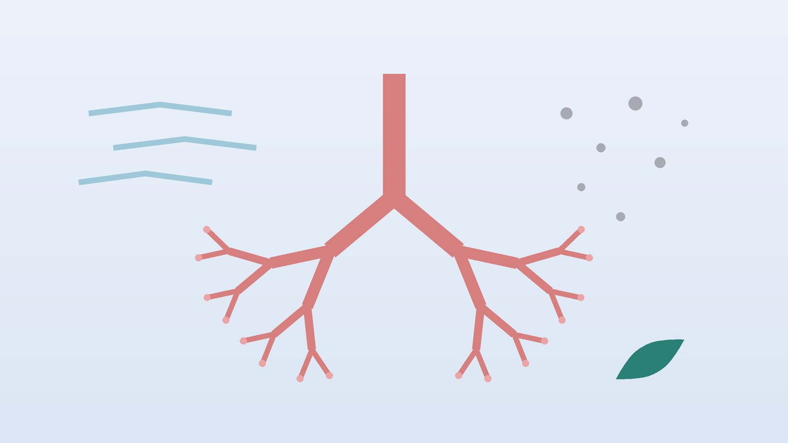

숨이 차고 쌕쌕거린다면, 천식의 원인과 한방 관리

혹시 천식일까요?
- 숨을 내쉴 때 가슴에서 쌕쌕, 휘파람 같은 소리가 난다
- 밤이나 새벽에 기침이나 숨참 때문에 깬 적이 있다
- 찬 바람을 쐬거나 미세먼지가 심한 날 가슴이 조인다
- 감기에 걸리면 기침이 몇 주씩 끌고 숨이 찬다
- 계단을 오르거나 뛰고 나면 남보다 숨이 오래 가쁘다
- 비염이나 아토피 피부염이 있거나, 가족 중에 천식이 있다
이 체크리스트는 진단 도구가 아닙니다. 해당하는 항목이 있으면 폐기능 검사로 천식인지 먼저 확인하세요.
숨참이 이렇다면 지체하지 말고 119
- 숨이 너무 차서 한 문장을 끝까지 말하지 못한다
- 입술이나 손톱 끝이 파랗게 변한다
- 속효성 흡입제(발작이 올 때 쓰는 약)를 써도 숨참이 풀리지 않거나 금방 다시 온다
- 정신이 흐려지거나 몹시 처지고, 쌕쌕 소리마저 작아진다
- 아이가 숨이 차서 물을 먹지 못하고 울지도 못한다
위 신호는 심한 천식 발작일 수 있습니다. 바로 119에 전화하거나 응급실로 가세요. 쌕쌕 소리가 줄어든 것이 공기가 거의 드나들지 못해서일 수도 있습니다. 기다리는 동안 똑바로 앉아 처방받은 대로 속효성 흡입제를 쓰세요.
천식은 왜 생기고, 어떻게 확인하나요?
천식이 있는 기관지 안쪽은 늘 조금씩 부어 있고 예민합니다. 자극이 닿으면 기관지 근육이 오그라들고 점막이 더 부으며 가래가 늘어, 좁아진 길로 숨을 내쉴 때 쌕쌕 소리가 납니다.
- 타고난 바탕: 알레르기 체질, 가족력, 비염·아토피가 흔히 함께 있습니다.
- 발작을 부르는 자극: 찬 공기, 미세먼지, 감기, 운동, 담배 연기, 집먼지진드기, 꽃가루, 반려동물 털이 대표적입니다.
- 약과 관련된 천식: 아스피린 같은 일부 진통소염제나 베타차단제에 숨이 차는 분이 있어, 새 약을 받을 때 천식이 있다고 알리세요.
천식은 증상만으로 단정하지 않습니다. 폐기능 검사에서 내쉬는 힘이 줄어 있다가 기관지 확장제 흡입 뒤 좋아지는지 보고, 필요하면 기관지 유발 검사를 더합니다. 국제 천식 지침인 GINA는 성인과 청소년에게 속효성 흡입제만 단독으로 쓰는 것을 권하지 않고, 흡입 스테로이드가 들어간 약을 치료의 바탕으로 두도록 안내합니다.
한의학은 천식을 어떻게 보나요?
한의학에서는 목에서 쌕쌕 소리가 나는 것을 효(哮), 숨이 가빠 어깨를 들썩이며 쉬는 것을 천(喘)이라 하여, 둘이 함께 오는 천식을 효천(哮喘)이라 불렀습니다. 잠잠할 때도 폐에 끈끈한 담(痰)이 뿌리처럼 숨어 있다가 찬 기운이나 피로에 다시 일어나 기도를 막는다고 보았습니다.
그래서 발작이 잦을 때는 담을 삭이고 막힌 기운을 풀며, 잠잠할 때는 폐, 담을 덜 만들게 하는 비위(소화 기능), 깊은 숨을 받치는 신(腎)의 힘을 채워 발작의 빈도를 줄이는 쪽으로 봅니다.
나의 천식은 어떤 유형일까?
폐기능 검사로 천식 진단을 받고 흡입제 치료를 이어 가는 것을 전제로 한 한의학적 구분입니다.
1. 한담(寒痰) 찬 바람에 터지는 유형
- 이런 분에게 많아요
- 겨울과 환절기에 유독 심해지는 분
- 나타나는 모습
- 찬 공기에 곧바로 쌕쌕거리고 묽고 흰 가래가 나온다
- 함께 오는 몸의 신호
- 맑은 콧물, 재채기, 손발이 참
- 진찰에서 보이는 모습
- 혀가 옅고 설태가 희며 촉촉함
- 치료 방향
- 찬 기운을 흩고 묽은 담을 말리는 방향 (소청룡탕 계열)
- 오늘부터 해 볼 것
- 겨울 외출 때 마스크와 목도리로 코와 입을 덮어 공기를 데우세요.
2. 열담(熱痰) 가래가 누렇고 답답한 유형
- 이런 분에게 많아요
- 감기 뒤 기관지염이 자주 겹치는 분, 열이 많은 체질
- 나타나는 모습
- 누런 가래가 잘 안 뱉어지고 가슴이 답답하다
- 함께 오는 몸의 신호
- 얼굴이 붉어짐, 목마름, 변비
- 진찰에서 보이는 모습
- 혀가 붉고 설태가 누렇게 낌
- 치료 방향
- 열을 식히고 엉긴 가래를 풀어 주는 방향 (정천탕 계열)
- 오늘부터 해 볼 것
- 미지근한 물을 자주 마셔 가래를 묽게 해 보세요.
3. 폐비기허(肺脾氣虛) 감기에 잘 지는 유형
- 이런 분에게 많아요
- 잦은 감기와 함께 발작이 오는 분, 입이 짧은 아이
- 나타나는 모습
- 목소리가 작고 땀이 잘 나며 감기 끝에 숨참이 길다
- 함께 오는 몸의 신호
- 쉽게 피곤함, 묽은 변, 식욕 저하
- 진찰에서 보이는 모습
- 혀가 옅고 가장자리에 잇자국, 맥에 힘이 없음
- 치료 방향
- 겉을 지키고 소화 기능을 북돋는 방향 (육군자탕·옥병풍산 계열)
- 오늘부터 해 볼 것
- 찬 음료와 밀가루 간식을 줄이고 세끼를 일정하게 드세요.
4. 폐신양허(肺腎兩虛) 오래되어 숨이 짧은 유형
- 이런 분에게 많아요
- 오래된 천식이 있는 어르신
- 나타나는 모습
- 조금만 움직여도 숨이 차고 들숨이 얕다
- 함께 오는 몸의 신호
- 허리·무릎 시큰함, 밤 소변, 발이 참
- 진찰에서 보이는 모습
- 혀가 옅고 맥이 깊고 약함
- 치료 방향
- 깊은 숨을 받쳐 주는 신의 기운을 돕는 방향 (신기환 계열)
- 오늘부터 해 볼 것
- 입술을 오므리고 천천히 내쉬는 호흡을 하루 몇 번씩 연습해 보세요.
한의원에서는 어떻게 진찰하나요?
- 병원 검사와 약 확인: 폐기능 검사 결과, 흡입제 이름과 횟수, 최근 응급실 방문 여부를 확인합니다. 폐기능 검사를 아직 받지 않았다면 먼저 받도록 안내합니다.
- 발작의 계기: 언제, 무엇을 한 뒤 숨이 차는지 여쭙고 함께 정리합니다.
- 함께 있는 병: 비염, 축농증, 역류처럼 천식을 흔드는 병을 살핍니다.
- 맥·혀와 체질: 찬지 뜨거운지, 담이 많은지, 기운이 약한지를 나눠 유형을 정합니다.
침·약침·한약 치료는 어떻게 하나요?
1. 침 치료
발작이 가라앉은 뒤 숨이 안정된 상태에서 놓습니다.
- 정천(定喘): 고개를 숙이면 가장 튀어나오는 목뼈 바로 아래에서 양옆으로 손가락 반 마디쯤 떨어진 자리입니다.
- 폐수(肺兪): 등의 셋째 등뼈 아래에서 양옆으로 손가락 두 마디 너비쯤 떨어진 곳입니다.
- 공최(孔最): 팔 안쪽 엄지 쪽, 팔꿈치 주름에서 손목 쪽으로 손바닥 너비보다 조금 더 내려온 곳입니다.
- 풍륭(豐隆): 정강이 바깥쪽, 무릎과 발목의 중간 높이로 가래가 많을 때 더합니다.
침 치료의 천식 효과를 살핀 연구들은 규모가 작고 결과가 엇갈려, 코크란 검토도 근거가 충분하지 않다고 정리했습니다. 그래서 침은 흡입제를 대신하지 않고, 가슴 답답함과 등의 긴장을 덜어 주는 보조 치료로 씁니다.
2. 약침
정천과 폐수처럼 등 위쪽 혈자리에 체질에 맞는 약침을 소량 놓습니다. 등 위쪽은 폐와 가까워 얕게 놓습니다. 임신 중에도 주수와 상태를 확인한 뒤, 피해야 할 부위를 제외하고 시행합니다. 소아 천식에는 약침을 쓰지 않습니다.
3. 한약
발작이 잦은 시기와 잠잠한 시기의 처방 방향을 나눠 탕약 위주로 씁니다. 환절기와 겨울을 넘기며 단계적으로 보는 경우가 많고, 한약이 발작을 얼마나 줄이는지에 대한 연구는 아직 규모가 작아 흡입제와 함께 쓰는 보조 치료로 안내합니다. 흡입제는 한약과 함께 쓰셔도 되며, 드시는 약은 알려 주시면 확인해 처방합니다. 임신 중이거나 고혈압·심장 질환 병력이 있다면 진료 때 꼭 알려 주세요. 확인 후 안전한 약재로 처방합니다. 한약은 원장이 원내 탕전실에서 약재 선별부터 달이는 과정까지 직접 관리하며, 10일분씩 처방해 복용 경과를 보고 약재 구성과 양을 조절합니다.
원장님이 네이버 블로그에 진료 이야기와 건강 정보를 꾸준히 올리고 있습니다. 더 많은 이야기는 블로그에서 확인해 보세요.
블로그 보기관리는 어떤 순서로 진행되나요?
- 진단과 기본 치료 폐기능 검사로 천식을 확인하고, 호흡기내과·소아청소년과에서 흡입제를 정합니다.
- 첫 한방 진료 발작의 계기와 체질을 살펴 유형을 나눕니다.
- 발작이 잦은 시기 침과 한약으로 가래와 답답함을 덜고 증상 일기를 씁니다.
- 잠잠한 시기 몸의 바탕을 채우는 처방으로 바꿔 찬 계절에 대비합니다.
- 흡입제 조절 오래 안정되면 흡입제 단계는 처방한 의사가 폐기능을 보며 정합니다.
기간은 천식이 이어진 햇수, 발작 빈도, 나이와 체질에 따라 달라지며 진찰 후 안내합니다.
천식을 덜 흔드는 생활 관리
- 흡입제는 매일, 바르게: 증상이 없는 날도 처방대로 쓰고, 스테로이드 흡입 뒤에는 입을 헹구세요.
- 찬 공기 데우기: 겨울 아침에는 마스크로 코와 입을 가리고 코로 천천히 숨 쉬세요.
- 미세먼지 확인: 미세먼지 '나쁨' 날에는 운동을 실내로 옮기고 외출 때 KF 마스크를 쓰세요.
- 감기 예방: 손 씻기와 충분한 잠으로 감기를 줄이고, 독감 예방접종을 해마다 챙기세요.
- 운동은 천천히 시작: 10분쯤 가볍게 몸을 풀고 시작하면 운동 뒤 숨참이 덜합니다.
다른 진료가 함께 필요한 경우
- 흡입제를 쓰는데도 숨참으로 밤에 자주 깨면 호흡기내과에서 약 단계를 다시 정하세요.
- 오래 담배를 피운 40대 이후라면 만성폐쇄성폐질환(COPD)도 확인하세요.
- 숨참과 함께 다리가 붓거나 누우면 숨이 더 차면 심장 질환 확인이 필요합니다.
- 코막힘과 누런 콧물이 오래가면 이비인후과에서 비염·축농증도 함께 치료하세요.
- 숨참 때문에 불안이 커지면 증상이 가벼운 경우 한약 치료를 중심으로 관리하기도 하지만, 깊다면 정신건강의학과 치료를 함께 받으세요.
자주 묻는 질문 Q&A
- Q1. 천식은 평생 가나요?
- 예민한 기도는 오래 남는 경우가 많지만, 흡입제와 생활 관리로 발작 없이 지내는 분도 많습니다.
- Q2. 한약을 먹으면 흡입제를 끊어도 되나요?
- 아닙니다. 흡입 스테로이드 같은 처방 흡입제는 담당 의사와 상의 없이 끊지 마세요. 한방 치료는 함께하는 보조 치료입니다.
- Q3. 흡입 스테로이드를 오래 써도 괜찮나요?
- 먹는 스테로이드보다 훨씬 적은 양이 기관지에 직접 닿는 방식이라 장기 조절약으로 쓰입니다. 궁금한 점은 처방한 의사에게 물어보세요.
- Q4. 아이도 한방 치료를 받을 수 있나요?
- 가능합니다. 어린이에게는 약침을 쓰지 않고, 피부에 붙이는 소아 스티커침과 쓴맛이 덜한 약재 위주의 한약으로 진료합니다. 한약은 집에서 단것을 조금 타서 먹여도 되지만, 돌이 지나지 않은 아기에게는 꿀을 타지 마세요.
- Q5. 아이가 감기만 걸리면 쌕쌕거려요. 천식인가요?
- 어린아이는 기관지가 좁아 감기 때 쌕쌕거리기 쉬워 모두 천식은 아닙니다. 반복되면 소아청소년과에서 확인하세요.
- Q6. 운동할 때만 숨이 차요.
- 운동 유발 기관지 수축일 수 있어 폐기능 검사로 확인하세요.
- Q7. 임신 중인데 천식이 심해졌어요.
- 천식이 조절되지 않으면 엄마와 아기 모두에게 부담이라 처방 흡입제는 꾸준히 쓰세요. 주수를 알려 주시면 피해야 할 혈자리와 약재를 빼고 진료합니다.
- Q8. 숨이 답답할 때 눌러 볼 혈자리가 있나요?
- 손목 주름 엄지 쪽 끝, 맥이 뛰는 오목한 곳의 태연(太淵)을 지그시 눌러 보세요. 숨참이 심하거나 흡입제로 풀리지 않으면 바로 119를 부르세요.
문원열 대표원장한의사 · 365스마일한의원
임상 경력 15년, 인천 서구 가정동에서 개원 후 10년째 진료하고 있으며, FCST 턱관절학회·연부조직학회·침도학회 등에서 활동합니다. 아픈 곳만이 아니라 증상의 원인을 찾아 진료합니다.
진료 안내
- 진료시간
- 평일 09:00~20:00 (점심시간 13:00~14:00, 접수 마감 19:30)
토·일·공휴일 09:00~15:00 (접수 마감 14:30) - 주소
- 인천광역시 서구 가경주로 46, 2층 (가정동)
인천2호선 가정중앙시장역 인근
영상으로 길 안내 보기 → - 주차
- 한의원 건물 바로 앞 1층 도원주차장
- 예약
- 예약 바로가기 또는 전화 예약
진료시간은 사정에 따라 바뀔 수 있으니 방문 전 전화로 확인해 주세요.
함께 읽으면 좋은 칼럼
건강 칼럼 전체 보기 →


참고 자료
- GINA (Global Initiative for Asthma). Global Strategy for Asthma Management and Prevention
- McCarney RW, et al. Acupuncture for chronic asthma. Cochrane Database of Systematic Reviews
- 질병관리청 국가건강정보포털 — 원문
※ 이 글은 일반적인 건강 정보이며, 개인의 상태에 따라 치료 방법과 결과는 다를 수 있습니다. 정확한 진단과 치료는 진료를 통해 결정됩니다. 침·약침 시술 후 드물게 멍, 통증 등이 생길 수 있습니다.